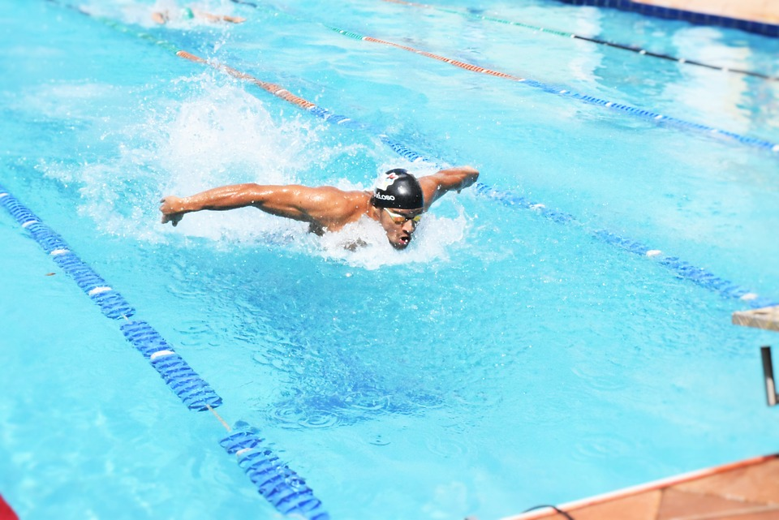
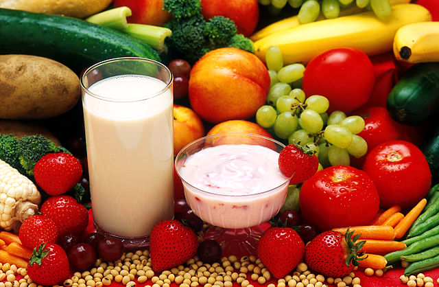

Swim meets usually last for a minimum of 4 hours consisting of 16 different events divided throughout 8 days. This includes men and women individual and relay events.

Swimming Workouts
Swim training vary between different groups and teams, but most consist of weight training, dryland workouts, and in water drills and workouts.

Diets and Food
With swimming being a very physically intensive sport the right diet is extremely important in order to improve and recover fast. Things such as carbohydrates and protein are essential for supplying the neccesary fuel, energy, repair, and growth for the swimmers body before and after competitions and trainings.